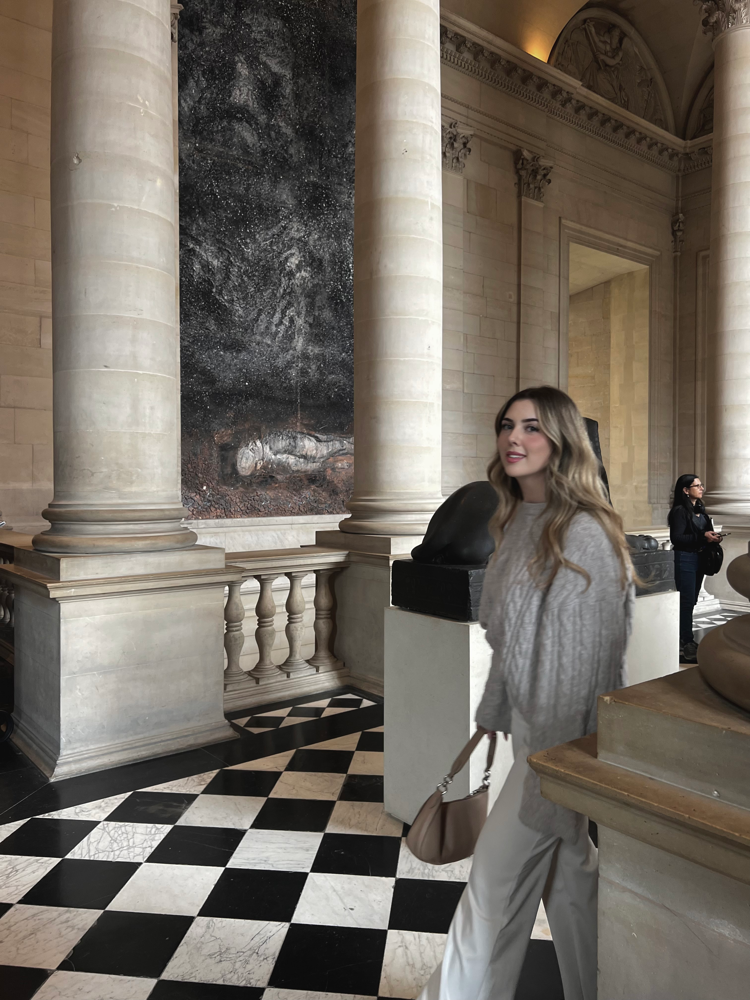
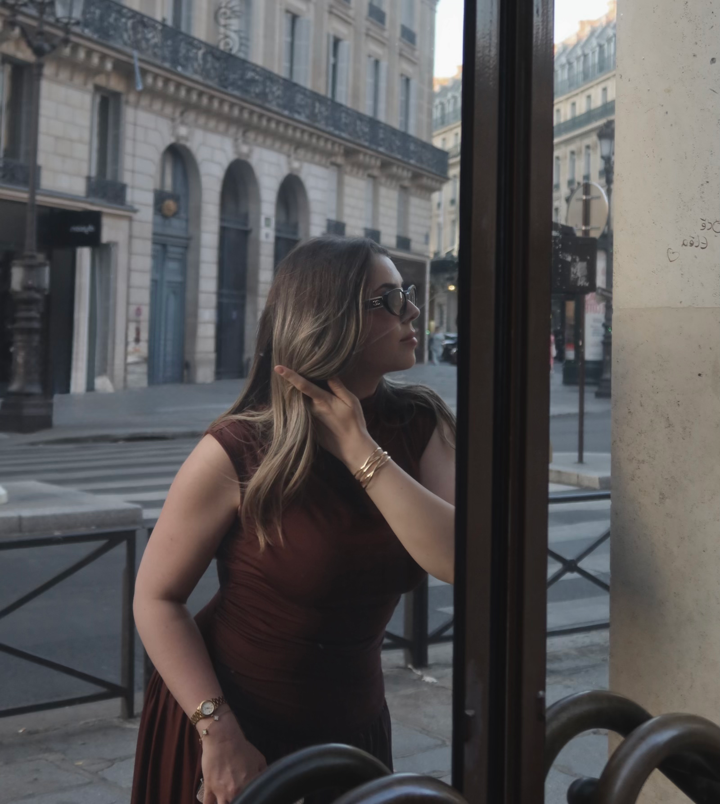

Hi, I’m Sarah. Outside of work, I spend a lot of time exploring creative topics such as design, content and visual aesthetics. I’m fascinated by how powerful ideas and the right details can come together to create a particular effect.

Professionally, I work in a structured, organised and solution-oriented way in IT. In my spare time, I spend a lot of time exploring design, aesthetics and visual concepts. I like to draw inspiration from fashion, photography and digital trends, and use these to develop my own style. I’m interested in how details come together to form an overall picture. I find it particularly fascinating how small details ultimately make all the difference.
I love visual concepts that look modern, understated and well thought-out.
Paris
Sofies Welt
Coca-Cola Zero with a slice of lemon and a lot of ice
Reality TV Shows

A small collection of songs I keep coming back to.